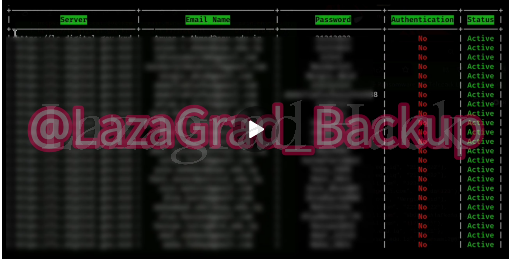

Kurdish Government Language Center Portal HACKED
2024-1-8
LHT News
As part of its escalating cyber operations, the Lazagrad Hack team revealed that a large-scale attack targeted hundreds of databases of the language centers of the Ministry of Higher Education and Scientific Research in the Kurdistan Regional Government. This operation comes within the framework of what the team described as the "Deterrence of Aggression" agreement, which aims to respond to the aggressive policies used against Syria.

Operation Details The team announced the hacking of the educational and language centers' electronic platform, allowing it to access hundreds of databases that include sensitive information related to the administrative and academic processes of these institutions. The team did not accurately reveal the quality of the data that was accessed, but the penetration size suggests that the data may include: personal information for students and staff. Academic records and student evaluations. Data related to the management of educational centers and programs. Internal correspondence and official documents linked to the Ministry of Higher Education.


Lazagrad Hack explained that this attack came as a direct response to what they described as "aggression against Syria", in reference to the interventions or policies followed by some regional parties in which the Kurdistan Regional Government may have a role. The process appears to be aimed at achieving several objectives, most notably: sending a warning message to the government and its associated institutions that its regional policies should be reviewed. Highlight the cyber strength and ability to reach sensitive systems of government institutions. Influencing the stability of the educational structure in the region by targeting major educational centers. The danger and impact of the leak on the educational sector is a serious threat to the educational sector in the Kurdistan region, especially if the stolen data is exploited or publicly published. Among the most prominent potential threats: endanger the privacy of students and staff if the data contains sensitive personal information. Disruption of academic and administrative systems as a result of database manipulation or destruction. Extortion of the government or educational institutions by threatening to publish or sell sensitive data to third parties. Loss of confidence in the electronic systems used in the management of educational institutions. The expected reactions from the Kurdistan Regional Government so far, no official comment has been issued by the Ministry of Higher Education and Scientific Research or the Kurdistan Regional Government on this breach. However, the government is expected to face great pressure to reveal the details of the incident and the measures taken to address the situation.
 EN
EN